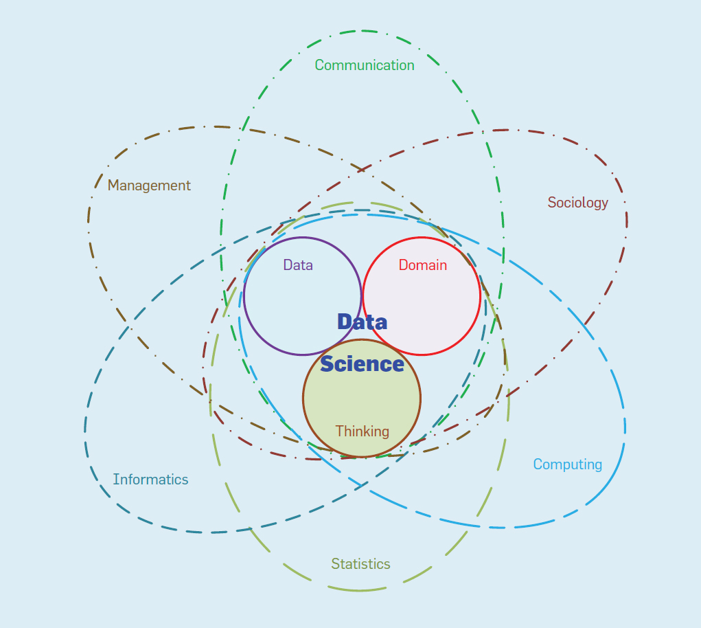

Campo interdisciplinario que se basa y sintetiza una serie de disciplinas y áreas del conocimiento, incluyendo estadística, informática, computación, comunicación, administración, y sociología, con el objetivo descubrir conocimento a partir de los datos
